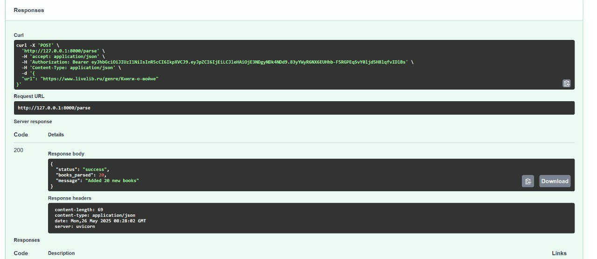
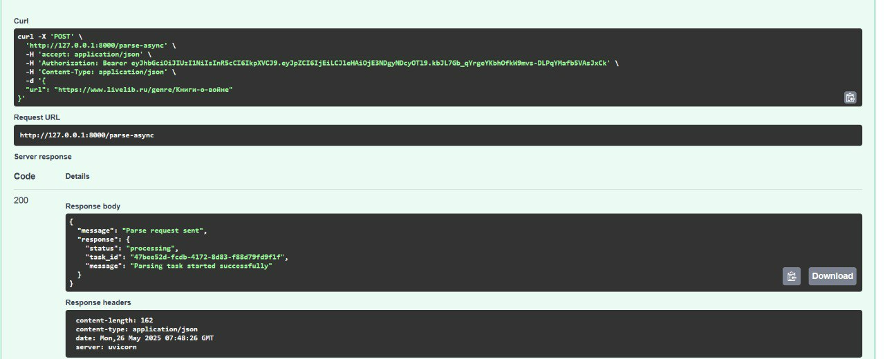
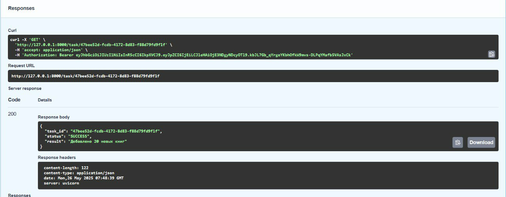
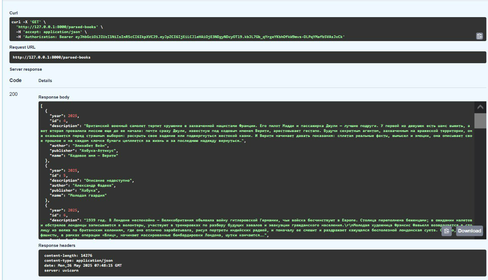

Упаковка FastAPI приложения в Docker, Работа с источниками данных и Очереди
Цель: научиться упаковывать FastAPI приложение в Docker, интегрировать парсер данных с базой данных и вызывать парсер через API и очередь.
Подзадача 1: Упаковка FastAPI приложения, базы данных и парсера данных в Docker
Реализация вызова парсера по http
@app.post("/parse")
async def parse(data: InputUrl):
try:
count = await parse_and_save_book(data.url)
return {
"status": "success",
"books_parsed": count,
"message": f"Added {count} new books"
}
except Exception as e:
raise HTTPException(status_code=500, detail=str(e))
Оба сервиса (app и parser) используют одну сеть bookcrossing_network.
Парсер зависит от основного приложения (depends_on: app).
Celery (из parser) может вызывать задачи, которые обрабатываются воркером.
app/Dockerfile
FROM python:3.9-slim
WORKDIR /app
ENV PYTHONPATH=/app
COPY requirements.txt .
RUN pip install --no-cache-dir -r requirements.txt -i https://mirrors.aliyun.com/pypi/simple/
COPY . .
CMD ["uvicorn", "main:app", "--host", "0.0.0.0", "--port", "8000"]
parser/Dockerfile
FROM python:3.11
WORKDIR /app
COPY requirements.txt .
RUN pip install --no-cache-dir -r requirements.txt -i https://mirrors.aliyun.com/pypi/simple/
COPY ./app ./app
CMD ["uvicorn", "app.main:app", "--host", "0.0.0.0", "--port", "9000"]
Создание файла docker-compose.yml для управления оркестром сервисов, включающих FastAPI приложение, базу данных и парсер данных.
db – база данных PostgreSQL с настройками пользователя, пароля и имени БД (берутся из переменных окружения).
Данные сохраняются в томе postgres_data.
Проверка здоровья: pg_isready.
celery – воркер Celery для асинхронных задач. Зависит от redis и db. Запускает воркер с логгированием info. redis – сервер Redis для кеширования или брокера сообщений Celery.
app – основное приложение. Пробрасывает порт 8000.
parser – отдельный сервис для парсинга книг. Зависит от db и app.
services:
db:
image: postgres:17
container_name: db
environment:
POSTGRES_USER: ${DB_ADMIN}
POSTGRES_PASSWORD: ${DB_PASSWORD}
POSTGRES_DB: ${DB_NAME}
env_file:
- .env
ports:
- "5432:5432"
volumes:
- postgres_data:/var/lib/postgresql/data
healthcheck:
test: ["CMD-SHELL", "pg_isready -U postgres"]
interval: 5s
timeout: 5s
retries: 5
networks:
- bookcrossing_network
celery:
build:
context: ./parser
container_name: celery-worker
command: celery -A app.celery_worker.celery_app worker --loglevel=info
depends_on:
- redis
- db
env_file:
- .env
volumes:
- ./parser/app:/app/app
environment:
- PYTHONPATH=/app
networks:
- bookcrossing_network
redis:
image: redis:7
container_name: redis
ports:
- "6379:6379"
networks:
- bookcrossing_network
app:
build:
context: ./app
dockerfile: Dockerfile
container_name: app
ports:
- "8000:8000"
depends_on:
db:
condition: service_healthy
environment:
- DB_ADMIN=${DB_ADMIN}
- DB_PASSWORD=${DB_PASSWORD}
- DB_HOST=db
- DB_PORT=${DB_PORT}
- DB_NAME=${DB_NAME}
env_file:
- .env
volumes:
- ./app:/app/app
networks:
- bookcrossing_network
parser:
build:
context: ./parser
dockerfile: Dockerfile
container_name: parser
depends_on:
db:
condition: service_healthy
app:
condition: service_started
env_file:
- .env
volumes:
- ./parser:/app/parser
networks:
- bookcrossing_network
volumes:
postgres_data:
external: true
name: postgres_data
networks:
bookcrossing_network:
Подзадача 2: Вызов парсера из FastAPI
Добавление в FastAPI приложение ендпоинт, который принимает запросы с URL для парсинга от клиента, отправляет запрос парсеру (запущенному в отдельном контейнере) и возвращать ответ с результатом клиенту.
@router.post("/parse")
async def parse(request: RequestURL):
try:
async with httpx.AsyncClient() as client:
response = await client.post("http://parser:9000/parse", json={"url": request.url})
response.raise_for_status()
return response.json()
except httpx.HTTPStatusError as e:
raise HTTPException(status_code=e.response.status_code, detail=f"Parser error: {e.response.text}")
except Exception as e:
raise HTTPException(status_code=500, detail=str(e))

Подзадача 3: Вызов парсера из FastAPI через очередь
@app.post("/parse-async")
async def start_parsing(data: InputUrl):
try:
logger.info(f"Starting parsing task for URL: {data.url}")
task = parse_url_task.delay(data.url)
logger.info(f"Task created with id: {task.id}")
return {
"status": "processing",
"task_id": task.id,
"message": "Parsing task started successfully",
}
except Exception as e:
logger.error(f"Failed to start task: {str(e)}")
raise HTTPException(
status_code=500,
detail=f"Failed to start parsing task: {str(e)}"
)

Создается объект AsyncResult, который связывается с задачей Celery по её task_id. celery_app – это экземпляр Celery, который управляет задачами.
Celery выносит парсинг в фоновый процесс, а Redis помогает управлять очередями задач и результатами.
@app.get("/task/{task_id}")
async def get_task_status(task_id: str):
task_result = AsyncResult(task_id, app=celery_app)
response = {
"task_id": task_id,
"status": task_result.status,
}
if task_result.ready():
if task_result.successful():
response["result"] = task_result.result
else:
response["error"] = str(task_result.result)
return response

@router.get("/parsed-books")
def get_parsed_books(session: Session = Depends(get_session)):
books = session.exec(select(RealBook)).all()
return books
